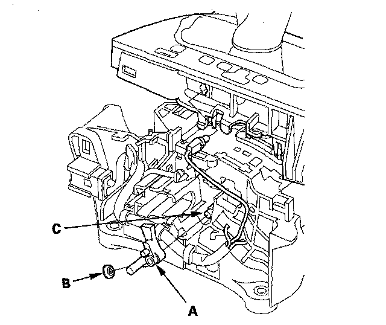

Shift Lock Stop, Shift Lock Stop Cushion Replacement
Shift Lock Stop, Shift Lock Stop Cushion Replacement1. Remove the shift lock solenoid.
2. Remove the shift lock stop (A) and stop cushion (B) and replace the shift lock stop or stop cushion.

3. Install the shift lock stop cushion on the shift lock stop.
4. Apply silicone grease to the pin (C) on the shift lever bracket base, and install the shift lock stop over the pin.
5. Install the shift lock solenoid.